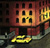

A Bedeteca de Lisboa é o único espaço em Portugal permanentemente entregue à banda desenhada. Aproveitando o espólio de publicações periódicas, acumulado por via do depósito legal na Hemeroteca, a Câmara Municipal de Lisboa disponibilizou-o, desde 23 de Abril de 1996, numa biblioteca de livre acesso subordinada à divulgação, estudo e promoção da Banda Desenhada no Palácio Contador-mor. Mas não se trata apenas de dedicar um espaço à Nona Arte, mas de fazer um centro cultural multimédia dedicado às questões da imagem e da leitura, instalado num lugar tão atraente quanto carente em tais serviços como é o bairro dos Olivais, na zona Oriental da cidade. De terça a sábado, das 10H00 às 19H00 - Entrada Livre Palácio do Contador-mor,
Mail
/ Links / English version |

|
Saudação de João
Soares, |